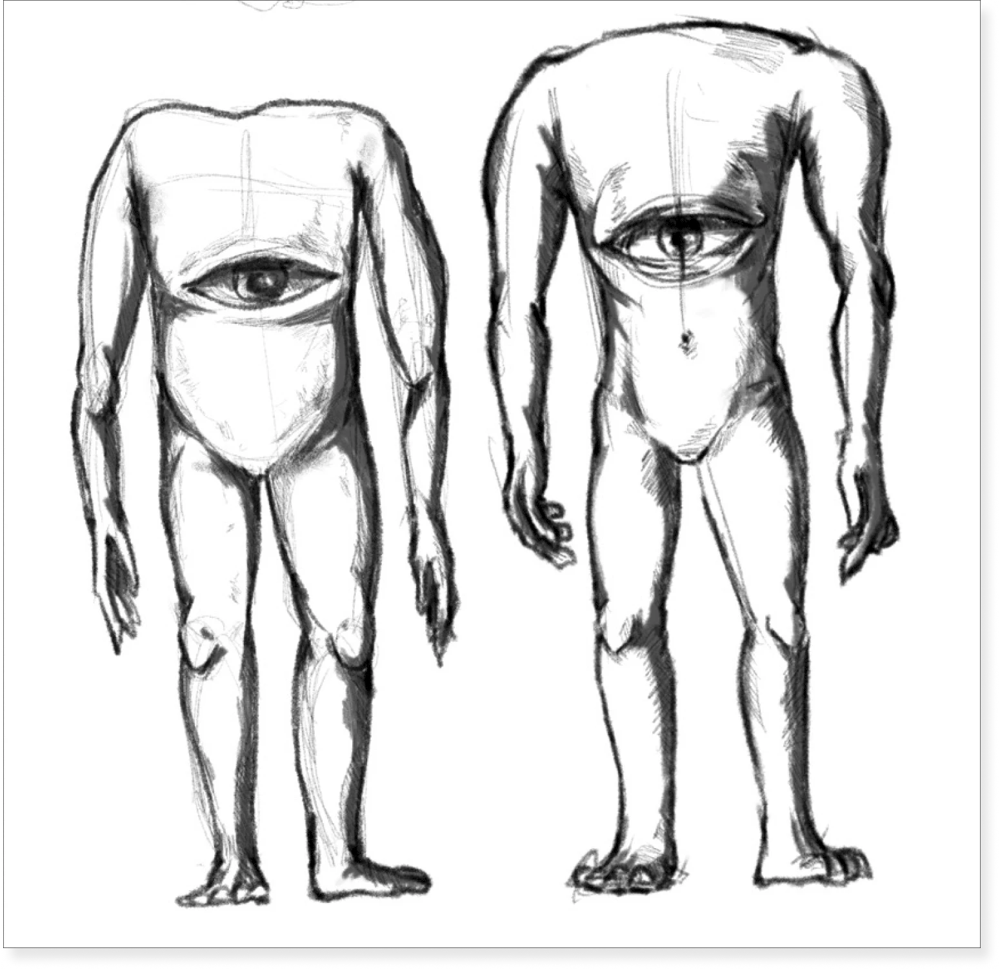

나는 인간과 괴물이 다르지 않다는 인식 아래 애니메이션 작업을 하고 있다.
내 작품 속에서 탄생한 괴물들은 허구의 존재가 아닌, 인간의 감정, 기억, 그리고
우리가 만들어낸 사회적 모순에서 비롯된 상징적인 존재이다.
나의 이야기는 주변 사회의 이슈와 일상에서 반복되는 현상에 뿌리를 두고 있다.
나는 이러한 현실을 개인적인 경험과 정서적 반응을 통해 재구성한다.
사람들이 무심코 지나치는 일이나 무감각해진 사회적 문제를
괴물이라는 객관적인 시선을 통해 바라보며
인식을 환기하고자 한다.
작품 속에서 나오는 괴물들은 단순한 선역이나 악역이 아닌 자신을 되돌아보게 하는 거울이 된다.
최근 우리 사회에서 뚜렷해지는 갈등과 대립의 구조는 나의 주요 관심사이다.
나는 이 갈등의 원인과 증폭 요인을 탐색하고, 감정의 충돌과 자기모순의 구조를
애니메이션이라는 매체로 해체하고 재구성하는 작업을 시도한다.
나의 목표는 단순한 표현 방식을 넘어, 사회에 대한 깊은 이해와 인간이 가진 내면의 복잡함을 마주하는 것이다.
관객이 작품을 단순히 보는 것을 넘어, 몰입하고 공감할 수 있는 이야기를 애니메이션으로 실현하고자 한다.
내 작품 속에서 탄생한 괴물들은 허구의 존재가 아닌, 인간의 감정, 기억, 그리고
우리가 만들어낸 사회적 모순에서 비롯된 상징적인 존재이다.
나의 이야기는 주변 사회의 이슈와 일상에서 반복되는 현상에 뿌리를 두고 있다.
나는 이러한 현실을 개인적인 경험과 정서적 반응을 통해 재구성한다.
사람들이 무심코 지나치는 일이나 무감각해진 사회적 문제를
괴물이라는 객관적인 시선을 통해 바라보며
인식을 환기하고자 한다.
작품 속에서 나오는 괴물들은 단순한 선역이나 악역이 아닌 자신을 되돌아보게 하는 거울이 된다.
최근 우리 사회에서 뚜렷해지는 갈등과 대립의 구조는 나의 주요 관심사이다.
나는 이 갈등의 원인과 증폭 요인을 탐색하고, 감정의 충돌과 자기모순의 구조를
애니메이션이라는 매체로 해체하고 재구성하는 작업을 시도한다.
나의 목표는 단순한 표현 방식을 넘어, 사회에 대한 깊은 이해와 인간이 가진 내면의 복잡함을 마주하는 것이다.
관객이 작품을 단순히 보는 것을 넘어, 몰입하고 공감할 수 있는 이야기를 애니메이션으로 실현하고자 한다.
I create animation rooted in the conviction that humans and monsters are fundamentally the same.
The monsters born in my work are not mere fictional beings, they are symbolic entities derived from human emotions, memories, and the social contradictions we collectively create.
My narratives are grounded in real world social issues and repetitive everyday phenomena.
I restructure these realities through my personal experiences and emotional responses.
By viewing easily overlooked events or desensitized social problems through the objective lens of the monster, I aim to reawaken awareness in the audience.
The monsters in my films are neither purely good nor purely evil.
They serve as mirrors that prompt viewers to reflect on themselves.
Recently, my primary focus has been the increasingly pronounced structure of conflict and confrontation in modern society. I explore the causes and amplifiers of these conflicts, using animation as a medium to deconstruct and reconstruct the clash of emotions and the framework of self-contradiction.
My goal is to move beyond simple methods of expression to achieve a deeper understanding of society and confront the complexity of the human psyche. Ultimately, I strive to realize animated stories that allow the audience to fully immerse, engage, and empathize, rather than just passively watch.
The monsters born in my work are not mere fictional beings, they are symbolic entities derived from human emotions, memories, and the social contradictions we collectively create.
My narratives are grounded in real world social issues and repetitive everyday phenomena.
I restructure these realities through my personal experiences and emotional responses.
By viewing easily overlooked events or desensitized social problems through the objective lens of the monster, I aim to reawaken awareness in the audience.
The monsters in my films are neither purely good nor purely evil.
They serve as mirrors that prompt viewers to reflect on themselves.
Recently, my primary focus has been the increasingly pronounced structure of conflict and confrontation in modern society. I explore the causes and amplifiers of these conflicts, using animation as a medium to deconstruct and reconstruct the clash of emotions and the framework of self-contradiction.
My goal is to move beyond simple methods of expression to achieve a deeper understanding of society and confront the complexity of the human psyche. Ultimately, I strive to realize animated stories that allow the audience to fully immerse, engage, and empathize, rather than just passively watch.
IG : cha.charara
Digital Art (B.A), Division of Design and Art, Yonsei University
Experience
2022 - 2024 H1GH L0W, 3D designer
Project
2025 – Artist Jin-Yo Mok, Unreal Performance: Zelkova Story, 3D Art, Seoul National University
2024 – Artist Yoon-Jeong Han, Sea Unseen: The Unseen Sea, 3D Art, Sejong Center for the Performing Arts
2022 – Netflix All of Us Are Dead Pop-up Store, Animation & Level Design, Seoul Express Bus Terminal
2021 – CNN Apparel Brand Film Go There, VFX & Animation
2021 – Nike × PeaceMinusOne KWONDO 1 Pop-up Photo Booth, Background Design & Animation
Exhibition
2023 – sense collective. sense collection: momentum. 2025. Platform-L, Seoul
↑